▶️ Video tour
A 4-minute walk through every feature, with captions. No sound needed.
Video won't play? It works in Chrome, Android and recent iPhones. On an older iPhone, open this page in Chrome, or ask whoever set up the site for the YouTube link.
👋 Getting started
You only do this once.
1. Open your invite link
You'll receive a link by Zalo, Messenger or email. Tap it, then:
- Check your name.
- Type your email address.
- Choose a password (at least 8 characters) and type it twice.
- Tap Join 🎉.
That's it: you're in. Next time, tap 💕 Sign in and use the same email and password.
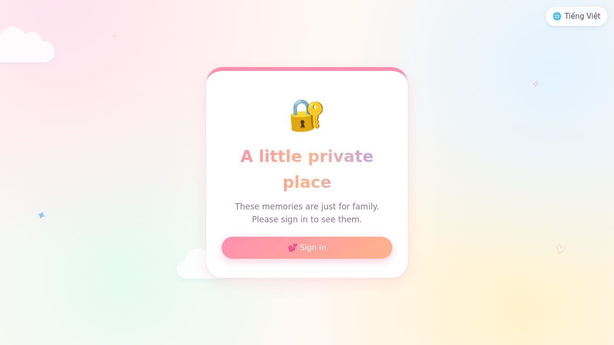
2. Put it on your phone's home screen
So it opens like an app:
- iPhone (Safari): tap the Share button ⬆️, then Add to Home Screen.
- Android (Chrome): tap ⋮ at the top right, then Add to Home screen.
Your phone remembers that you're signed in.
👀 Looking around everyone
Things everyone in the family can do.
The top of the page
Her name, and how old she is today. The age updates by itself.
Below it are three tabs: 🌈 Timeline 📏 Growth 💌 Letters.
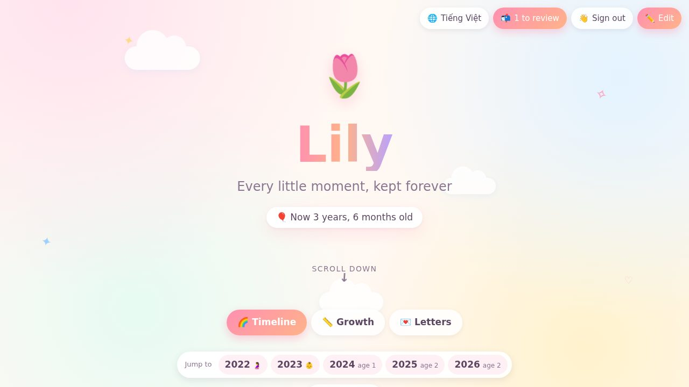
On this day, jump bar and tags
- 🗓️ On this day shows what happened on today's date in earlier years. Tap one to go to it.
- Jump to takes you straight to a year.
- Tags (like 🎂 Birthdays or 🌟 Firsts) show only those memories. Tap All to see everything again.
- Memories tagged 🎆 Celebration glow gold and greet you with little fireworks when you scroll to them.
- At the very end, ⬆️ Back to the beginning takes you back to the top.
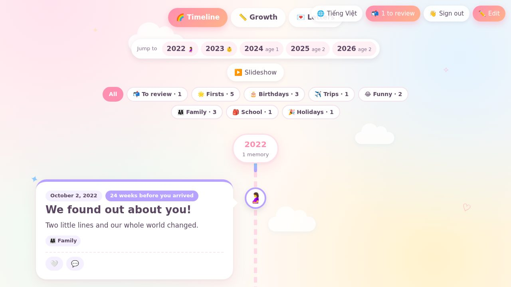
The timeline
Scroll down to read her story, from the very beginning. Each memory shows the date and how old she was.
Tap a photo to see it big. Use ‹ › to see the others, and ✕ to close.
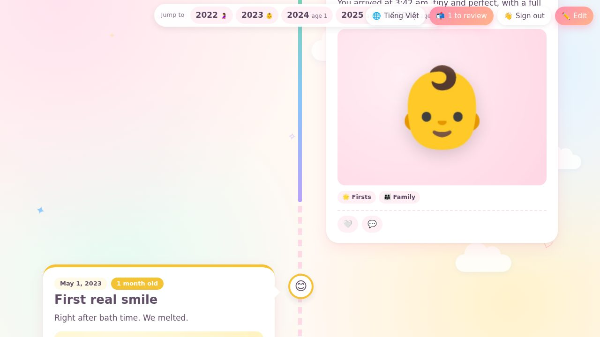
Hearts and comments
- Tap 🤍 to send a heart. Tap again to take it back.
- Tap 💬 to read and write comments. The 😊 button adds emoji.
- The first time, the site asks what to call you (for example “Grandma Rose”).
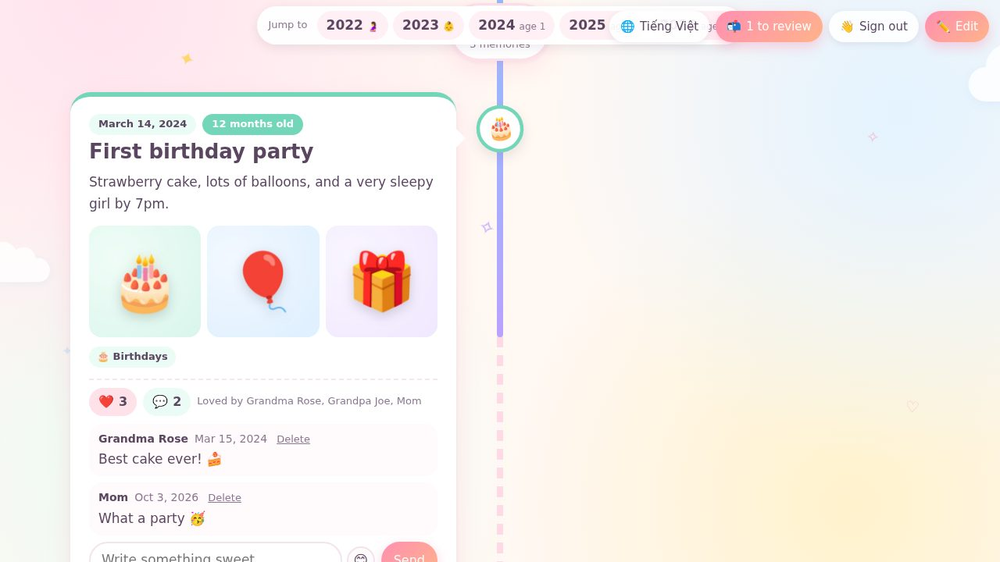
English or Tiếng Việt
Tap 🌐 at the top to switch language. Each phone remembers its own choice.
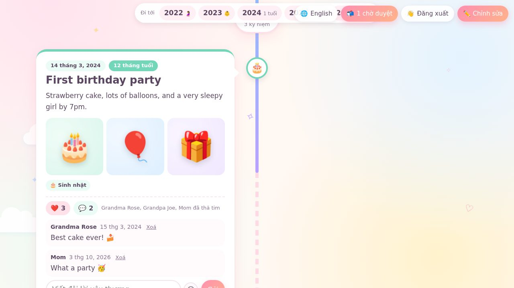
Slideshow
- Tap ▶️ Slideshow above the timeline.
- Choose the dates and a speed (🐢 slow, 🚶 normal, 🐇 fast).
- Tap ▶️ Start. The page scrolls by itself.
Tap the screen to pause; ⏹️ Stop to finish. Lovely on a TV or tablet.
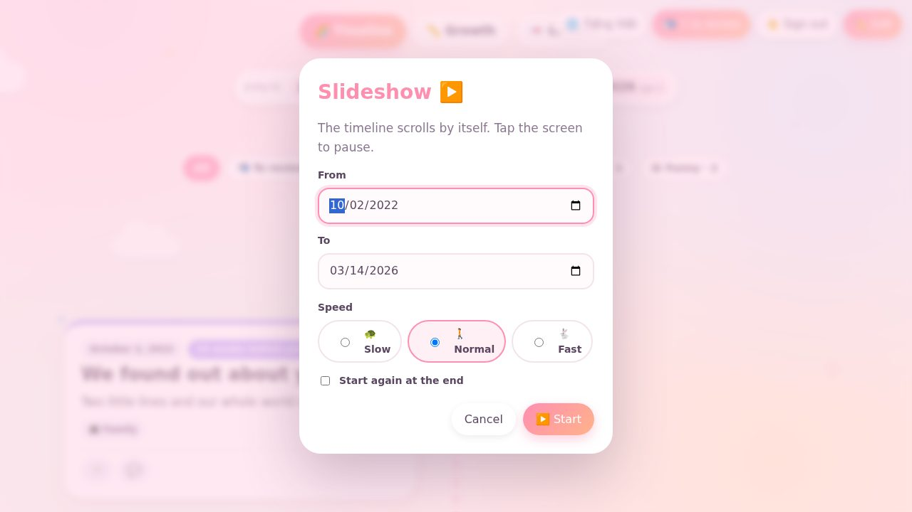
🎵 Music
Tap 🎵 at the top to play soft, gentle piano music (First Light, Canon for You, Little Hands, Watching You Sleep, Time Flies) or songs the parents uploaded. Choose a song, set the volume, and tap ⏸️ Pause to stop. The slideshow can play music too.
🔍 Search
Type in the search box above the timeline to find memories by a word, a tag, a person or a place. Accents are optional: da lat finds Đà Lạt.
📖 Year book next to it turns a whole year into pages to print or save as a PDF.
🌱 Growing
- 📸 Watch her grow: one photo every month or birthday. Tap ▶️ Play to watch them like a flipbook.
- ✅ Milestones: first smile, first steps, first day of school… with her age at each.
- 📏 Height & weight: charts over time; point at (or tap) a chart to see a measurement.
- 🧸 All about me: a little card each year: favourite food, toy, friend, what she wants to be.
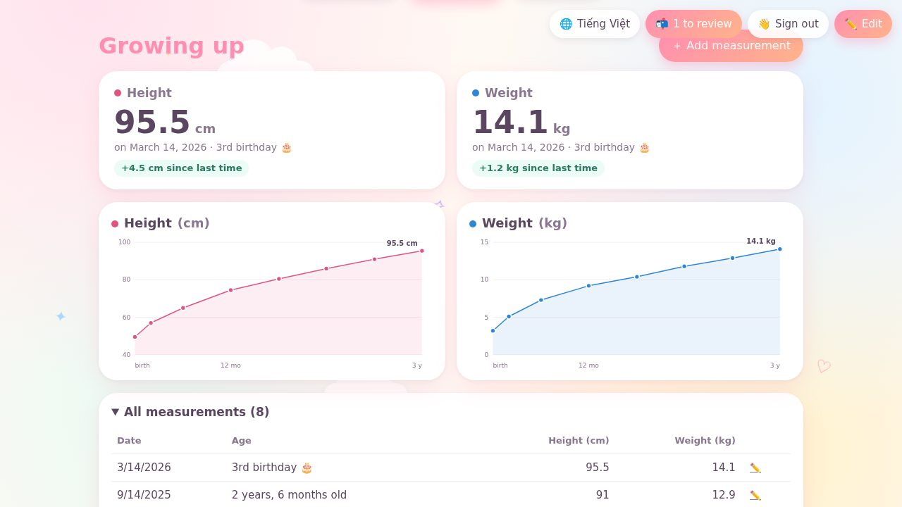
💌 Words
- 💬 Things she said: her funny and sweet words, sometimes in her own voice (tap ▶).
- 💌 Letters: anyone can write her a letter (✍️ Write a letter). Pick a date under Keep sealed until and others only see the envelope 🔒 until then — for example a letter for her 18th birthday.
- 🎂 Birthday wishes: write a wish for her next birthday. On the day itself, balloons and fireworks appear at the top.
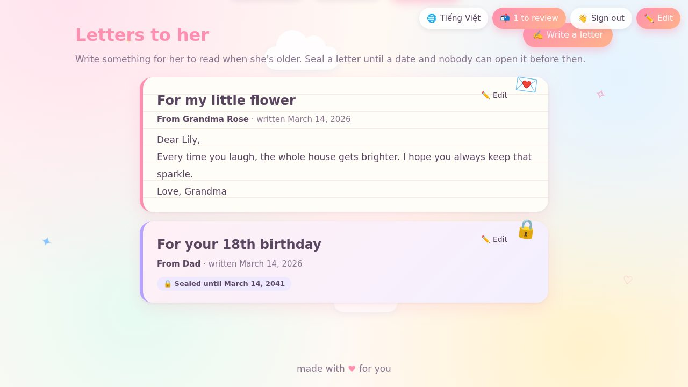
🌍 Her world
👨👩👧 People: the people who love her. Tap someone to see every memory you share with her. 🗺️ Places: a map of everywhere she has been; tap a pin to open those memories.
On a phone
Everything works the same way on a phone. The timeline line moves to the left side.
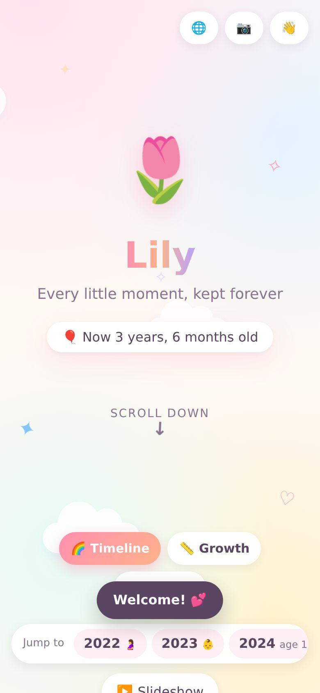
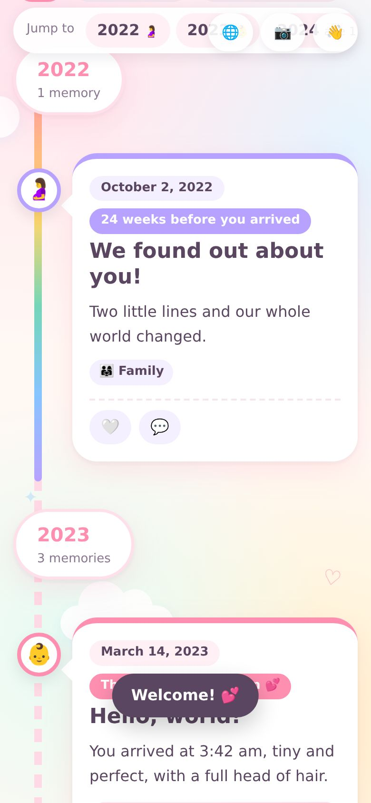
✏️ For parents admins only
Tap ✏️ Edit at the top right to add and change things. Tap ✅ Done when you're finished. Family members don't see this button.
Add a memory
- Tap ＋ Add a memory at the bottom.
- Write a title and choose the date.
- Pick a bubble emoji from the list, and a color.
- Write the story. The 😊 button adds emoji.
- Tap some tags (or type your own and press Enter).
- Tap 📷 Add photos / videos.
- Tap Save memory.
To change or delete a memory later, tap ✏️ Edit on its card.
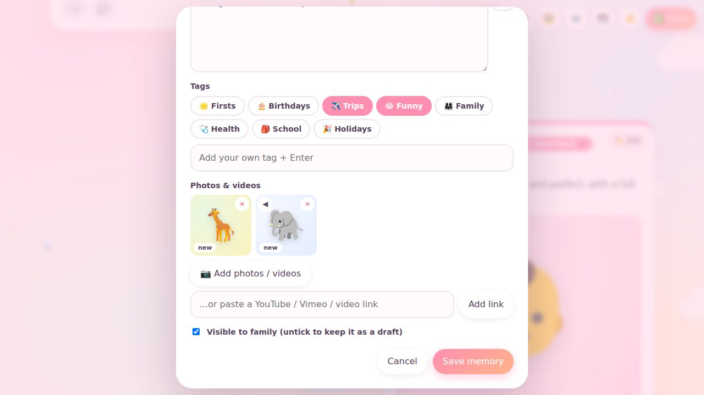
Fix a date or delete a tag
- Wrong date? In Edit mode, each memory's date becomes a little date box: tap it and pick the right day. It saves straight away.
- When you add a photo, the site offers 📷 Use the photo's date if it can read when the photo was taken.
- Tag made by mistake? In Edit mode, tap the ✕ next to it (in the tag row, or in the memory editor). It's removed from every memory. The built-in tags can't be deleted.
About videos
- Short clips (under 50 MB) can be added directly.
- For longer videos, upload them to YouTube as “Unlisted” or to Google Drive (shared as “Anyone with the link”), then paste the link into the box under Add photos / videos. The video plays right inside the memory, and it keeps the site fast and free.
Tell the family
After you add a memory, the site offers 📧 Email the family. It opens your email app with a short message to everyone already filled in. Just press send, or tap Not now.
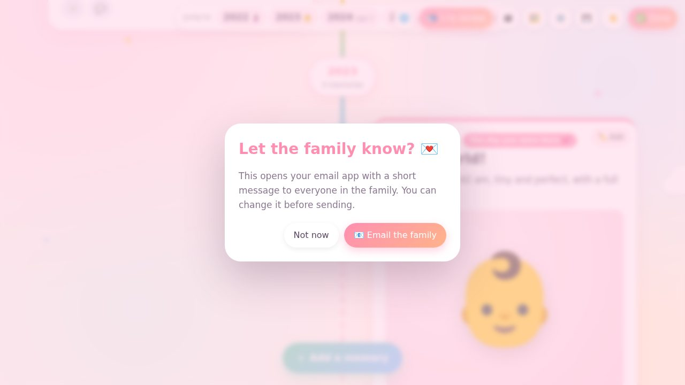
Add many photos at once
- Tap 🖼️ Many photos.
- Tap 📷 Choose photos & videos. On a computer you can use 📁 Choose a folder.
- Photos are grouped by the day they were taken. Give each day a title if you like.
- Tap Add … memories.
If a photo doesn't say when it was taken (photos saved from Zalo or Messenger often don't), its date is marked ⚠️ yellow: set it by hand.
Leave Save as drafts ticked: the new memories stay private (📝 Draft) until you add a story and tap Publish.
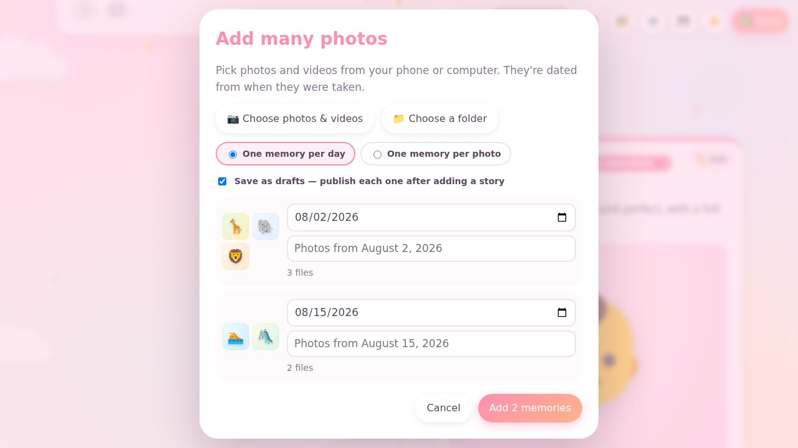
Drafts
Drafts have a purple 📝 banner and only parents can see them. Tap 📝 Drafts in the tag row to see them all. Edit one to add the story, then tap Publish.
You can also turn any memory into a draft: edit it and untick Visible to family.
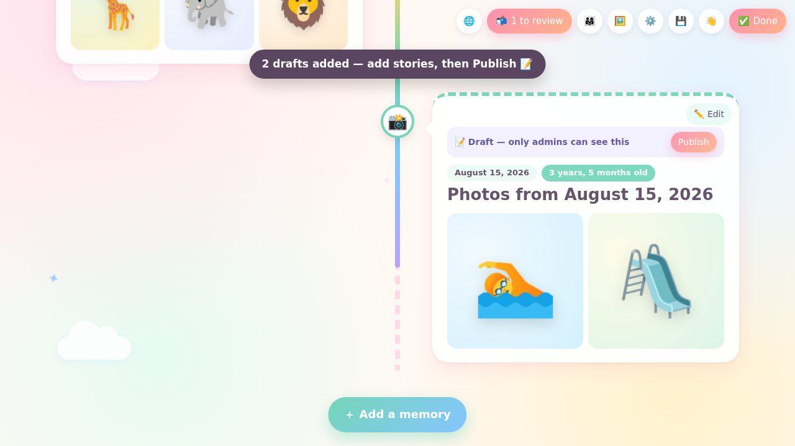
Approve photos from family
When a family member shares a memory, a 📬 1 to review button appears at the top. Tap it, then for each one:
- ✅ Approve puts it on the timeline,
- ✏️ Edit lets you fix it first,
- Reject deletes it.
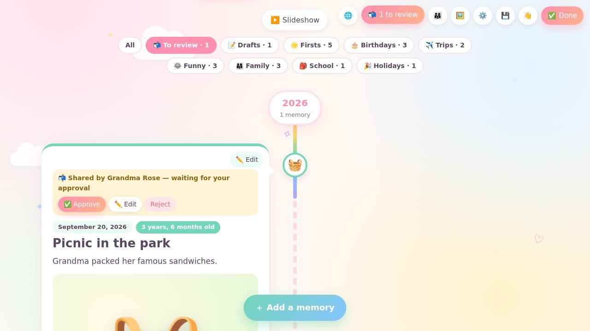
Invite family and choose who can edit
- In Edit mode, tap 👨👩👧 Family.
- Type their name and choose 👀 Family (can view) or 👑 Admin (can edit).
- Tap Create invite link, then 📋 Copy link and send it to them.
Or use Create a login yourself: type their name, email and a password (🎲 suggests an easy one), tap Create login, then copy the ready-made message and send it to them.
Each invite link works once and expires after 14 days. In the same place you can change someone's access, set a new password for them (if they forgot it), or remove them.
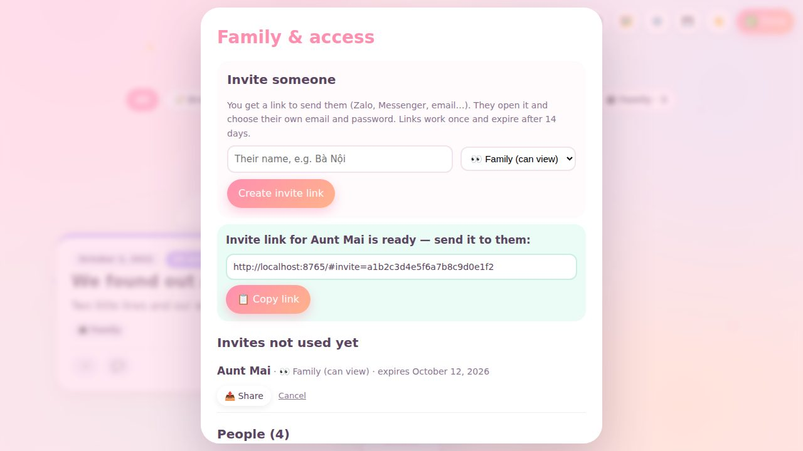
Sayings, milestones, people and more
- Voice: in a memory or a saying, tap 🎙️ Record voice, then Stop. You can also upload a sound file.
- Who & where: in a memory, open 👥 People, place & tags, tap the people in it, and search the place (e.g. Đà Lạt). Add people first in 🌍 Her world → People.
- Milestones: tap one to set its date; ＋ Add your own for anything else.
- All about me: ＋ New card once a year; last year's answers are filled in, so you only change what's new.
- 🩺 Health (only parents see it): vaccines, check-ups, illnesses, allergies and medicines.
- A small note reminds you on her "month-day" if nothing was added for a while, and when it's time for a backup.
Settings and backup
- ⚙️ Settings (or ✏️ Edit photo & name under her picture): her photo (drag and zoom to fit the circle), a cute decoration (🎀 bow, 👑 crown, 🌸 flowers, ✨ stars, 💕 hearts, 🐰 bunny), her name, birthday (used for all the ages), emoji and tagline, and the cute sparkly pointer.
- 🎵 → ＋ Upload a song: add your own music (MP3, up to 15 MB).
- 🌱 Growing → 📏 Height & weight → ＋ Add measurement: add her height and weight now and then.
- 🧰 Tools at the top holds Many photos, Family, Settings, Backup and a monthly reminder for your phone's calendar.
- 💾 Backup: downloads everything (photos, stories, letters…) as one file. Do it every month or two, and keep it somewhere safe like Google Drive.
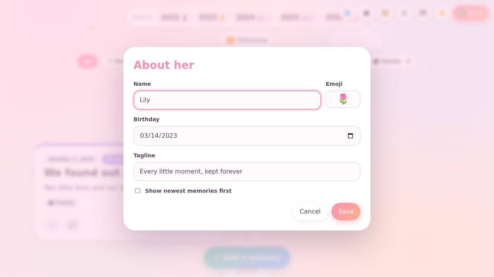
👨👩👧 For family
Grandparents, aunts, uncles and friends can look, send hearts, comment and write letters. They can't change or delete anything.
Share a memory
Have a lovely photo of her? Tap 📷 Share a memory at the top, add a title, the date and your photos, then tap 📬 Send for approval.
You'll see it marked ⏳ waiting for approval until the parents approve it. Then everyone can see it.
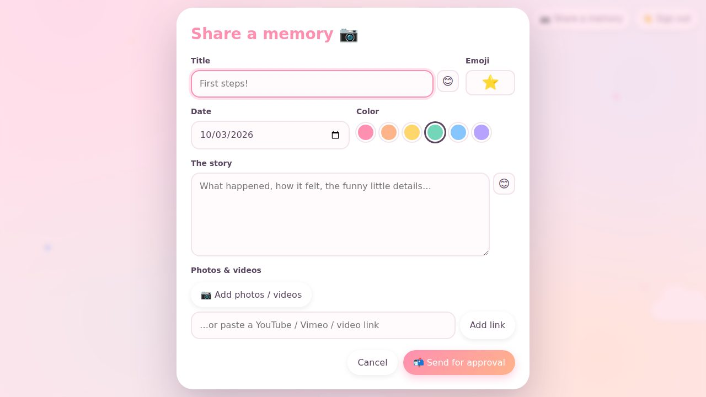
❓ Help
- I forgot my password.
- Ask a parent. They can set a new one for you in 👨👩👧 Family → Set password.
- The site says “This account hasn't been given access yet”.
- Ask a parent to send you an invite link, or to change your access in the Family panel.
- My invite link doesn't work.
- Links work once and expire after 14 days. Ask for a new one.
- A video is “over 50 MB”.
- Upload it to YouTube (Unlisted) or Google Drive and paste the link instead. See About videos.
- The site says “The database setup needs updating”.
- This only appears for parents after a new version comes out. Tell whoever set up the site; it takes them a minute.
- The site won't load at all.
- If nobody has visited for a week, the free storage goes to sleep. Tell whoever set up the site; one click wakes it up and nothing is lost.